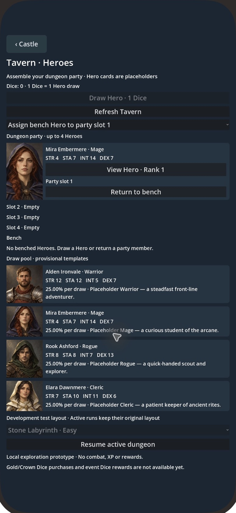
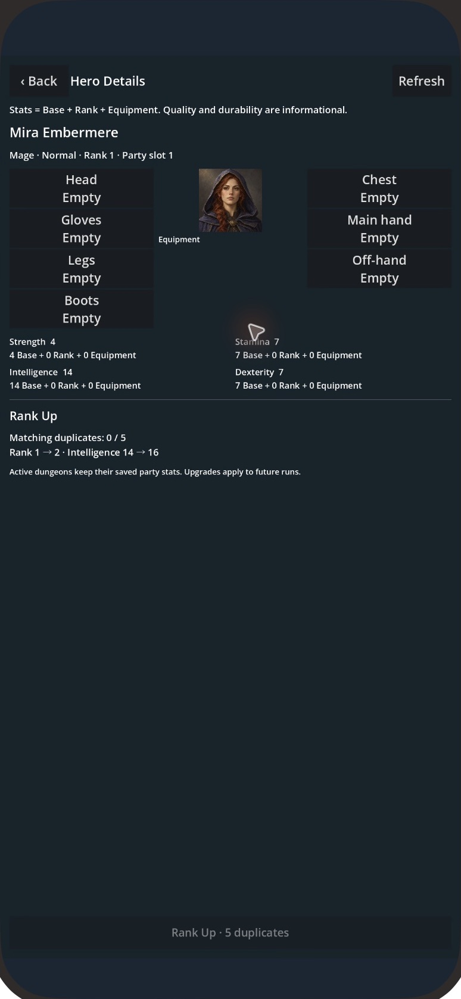

Kingdom Builder / Heroes & Dungeons
Gather your party.
See what lies below.
Leave the army battlefield behind. Dungeons bring the adventure down to the scale of a corridor, a decision and the heroes at your side.
The Tavern
A few companions.
A different kind of strength.
The Tavern is your connection to individual heroes. Dice draws add heroes to your collection, and you can assemble a dungeon party of up to four from the characters you own.
Four classes form the current foundation: Warrior, Mage, Rogue and Cleric. Each hero has Strength, Stamina, Intelligence and Dexterity, rather than the troop quantities used by field armies.
The current collection includes Alden Ironvale, Mira Embermere, Rook Ashford and Elara Dawnmere. Their portraits and templates are development assets, with further character and class development still to come.
Prepare the party before entering.
A dungeon run keeps the party it started with. Suspending does not free those heroes for a different run or replace their saved attributes with a new lineup midway through the adventure.

First-person exploration
One turn of the corridor.
One more piece of the map.
Dungeons use a first-person 3D view with discrete steps and quarter-turns. A minimap records the spaces you have explored, while the party and directional controls remain close at hand.
The current dungeon environments include enclosed Stone Labyrinths and open-air Abandoned Ruins. A winding passage and a ruined courtyard create different kinds of navigation, even within the same broader dungeon system.
An adventure you can return to.
Suspend a run and resume it later with its saved progress. Suspending is different from leaving: a confirmed Leave ends the run, while a suspended expedition remains active.
Wilderness runs lead toward a final chest. Completing the objective returns you to the overworld, with the current reward flow including Gold and an equipment item. Development Tavern tests do not award wilderness rewards.

Turn-based encounters
When the passage
is not quite empty.
Monster encounters interrupt exploration and bring your heroes' decisions to the foreground. The current build uses large 2D monster art over the 3D dungeon view, with party Health and the acting hero visible below.
Attack, Defend, Spells and Items form the command set. Basic attacks and defense are joined by class-appropriate spells such as the Mage's Fire I and the Cleric's Heal I.
Spells use persistent charges rather than a shared mana bar. Choosing a target and conserving a hero's remaining casts are separate decisions from simply moving through the maze.
Carry the consequences forward.
Health persists between encounters within the run. A downed hero and a defeated party have recovery consequences; leaving the dungeon is not a way to pretend the fight never happened.
The Items command currently supports inventory inspection. Combat consumable effects and additional spell systems remain in development, so the presence of a command does not imply every planned item mechanic is complete.

Your heroes, developed
More than a portrait
in a party slot.
Hero Details brings together class, rank, attributes and equipment. The current equipment layout includes Head, Chest, Gloves, Legs, Boots, Main hand and Off-hand slots.
Items have their own identity and compatibility rules. Equipment can be restricted by class and slot; a two-handed weapon occupies the main-hand role while reserving the off-hand. Different heroes cannot silently share the same equipped item.
Equipment bonuses appear separately from base and rank attributes, making the source of a hero's strengths visible. Quality and durability are displayed, but their deeper wear, repair and crafting systems are still being developed.
Make duplicate draws meaningful.
The first copy unlocks a named hero. Further matching copies become material for that hero's Rank upgrades, rather than creating an unlimited party of identical characters. Rank growth and equipment give the collection a purpose beyond simply filling slots.

Still in the workshop
Room for the adventure
to grow.
More dungeon difficulty and floor variety, expanded hero growth, equipment crafting and spell recharging are part of the continuing design work. They are not all playable simply because they appear in the design document.
A note on these screenshots
These are captures of the installed development build, including a Tavern test dungeon and placeholder hero art. They are not mockups of a finished game. Interface labels, balance, content and the final presentation may change.